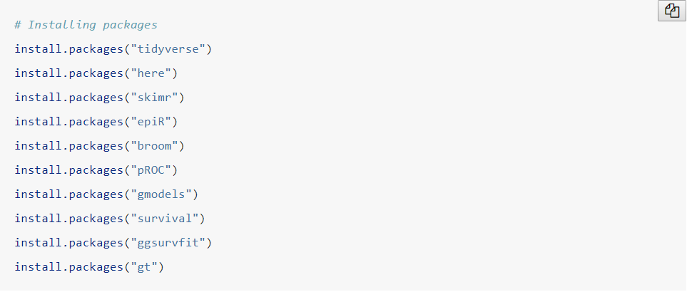
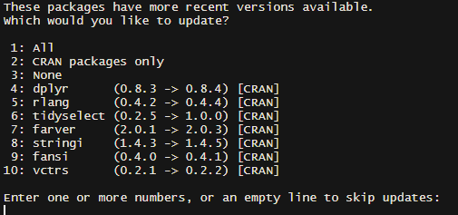

1 Week 1
1.1 Setting Up
As a note about this book - you can copy and paste code referenced in this book by hovering over the gray box containing the code, and clicking on the icon that appears in the top right corner.

1.1.1 Software Installation
Note: you’ll need to put aside 20 - 30 minutes to install the software on your computer.
R
Install a pre-compiled binary of R for your OS from here by clicking on “Download R for [your operating system]”: https://cloud.r-project.org
RStudio
Install RStudio Desktop by selecting the installer for your operating system under “Desktop Version”:
1.1.2 Setting up course files
To access this course, download the “Statistics Course Data.zip” file here. Create and name a folder (e.g. “MSKCC biostats course”) on your hard drive, and then unzip the file and save it in that folder. Open the “Statistics Course” folder and click to open the R project file called “Statistics Course.Rproj”. Opening this file will open RStudio (once you have it installed), and you can easily access all files from the “files” tab in the bottom right panel in RStudio.
There is a “Data” folder with 7 subfolders inside, which contain the data files needed for the examples and assignments for weeks 1-7.
There is a code file called “Install Packages Code.R” which contains the necessary code for you to install the packages for the course (see below for more details). There is another code file called “Code templates for students.R” which includes some example code that you can adapt.
Every time you work on this course, you should open RStudio by opening the “Statistics Course.Rproj” file. This allows R to automatically determine the file path location for the data files so you can access them without having to make any changes to the code. It may be helpful to create a desktop shortcut to the “Statistics Course.Rproj” file so you can easily access the course materials.
1.1.3 Using RStudio
When you open the “Statistics Course.Rproj” file, RStudio will open, and you will see four panes in the RStudio window (if you only see three panes, select “new file” and “New R script”).
The “console” window at the bottom left is where results will be shown if running R code from a .R file or interactively. The console window is also where you type in instructions for R. To run code in the console window, you can type or copy and paste the code and press “enter.”
The “source” window in the top left is where you will write out R code for your .R analysis file. To run code from the source window, highlight the lines of code you’d like to run and click the “run” button, located in the upper right corner of the source window, or use the shortcut “ctrl+enter” on your keyboard.
The top right panel includes several tabs. The most important tabs here are “environment”, which shows your current datasets and objects, and “history”, which shows previous commands that have been run from either the “console” or the “source” window.
The bottom right panel also includes several tabs. The “files” tab shows all files in your current directory. The “plots” tab is where plots will be shown if a plot is created. The “packages” tab shows all R packages that are available on your machine. The “help” tab will show help files, and help files can be searched from this tab. The “viewer” tab will show any other files that are created, for example, formatted tables.
1.1.4 Installing packages
For this course, you will need to install several packages which will allow you to use the set of functions included in that package. To install the necessary packages, open the “Install Packages Code.R” file. Run each line in this file by highlighting the line of code and clicking the “Run” button in the top right hand corner, or using the keyboard shortcut “ctrl-enter”. If you get the following popup message, please click “yes”. If after clicking “yes” once, the pop-up reappears, you can click “no” the second time.
Enter one line at a time, and wait for the packages to install before entering the next line. While the package is installing, you will see a red stop sign icon at the top right corner of the “console” window. Once the stop sign icon disappears, the package installation is complete and you can install the next package. You will only have to install the packages one time.
# Installing packages
install.packages("tidyverse")
install.packages("here")
install.packages("skimr")
install.packages("epiR")
install.packages("broom")
install.packages("pROC")
install.packages("gmodels")
install.packages("survival")
install.packages("ggsurvfit")
install.packages("gt")If you get a message that says “These packages have more recent versions available. Which would you like to update?”, you can enter “1” in the console window and press enter. This will update all necessary packages and complete the installation.

If you are using a Windows computer and get an error message that states Error: Could not find tools necessary to compile a package, you will need to download and install the Rtools program before proceeding. The instructions are below:
- Download the “recommended” version of Rtools (in green) from this site.
- Open the “Rtools##.exe” file and follow the installation instructions.
- After installation is complete, close RStudio and re-open by clicking on the “Statistics Course.RProj” file.
- Re-run the above code in the console to install the packages.
We will also be installing a package called {gtsummary} written by Dan Sjoberg, a statistician at MSKCC, which can format the results from your R code into a clean, publication-ready table which can be exported in many formats, including html, pdf and Word documents. The code below will install this package.
1.1.5 A Note About Packages
R is “open source” software. Unlike, say, Microsoft Word, where only Microsoft engineers can make changes, R packages are written by statisticians all over the world. There are hundreds of R packages available, and often there are many packages available to perform the same analyses. The packages you will use in this course have been chosen because they make coding easier, perform the necessary analyses and/or create nicely formatted output such as tables and graphs. You may work with statisticians who use different packages to perform these same analyses or to format tables and graphs. For all packages used in the course, if you give the package name to your statistician, they will be able to find and install the packages directly using the install.packages function as we have done above.
1.2 R Instructions
1.2.1 Opening a data file created by someone else
This is mainly what you will be doing during this course. You will be loading data from files with a “.rds” extension, which is a type of file that can be exported from R. There are two ways to do this:
- You can load files by typing or copying the following code into the console window and pressing enter. Each lesson will have code in the “Setting Up” section that will load all data necessary to run the examples in the lesson. You can copy and paste that code into your console window and press “enter” to load the files. In the “Assignments” section, there will also be code to load the files necessary for the assignment.
# You can copy and paste this code into the console window and press "enter"
# to load the data needed for the week 1 examples
lesson1a <- readRDS(here::here("Data", "Week 1", "lesson1a.rds"))- Using the “files” tab on the bottom righthand side of the RStudio window. Click on the “files” tab, and navigate to the folder where the data is stored, for example, by clicking on the “Data” folder. Click on the desired data “.rds” file. A “Load R Object” popup will appear, which allows you to change the name of the dataset when you import it. It is fine for this course to leave the dataset names as is. Clicking “OK” will load this file to your environment, which you can confirm by looking for the dataset in the top right “environment” tab.
1.2.2 Loading packages
The packages you have installed contain a number of functions. There are two ways to use the functions from these packages: by loading the package, or specifying the package name every time you use a function from that package.
If you attempt to use a function from a package without loading that package or specifying the package name, you will get an error.
As an example, the skim function comes from the {skimr} package. Using skim without loading or specifying the {skimr} package will give an error:
## Error in skim(lesson1a$age): could not find function "skim"You can give both the package name and function name to avoid this error:
| Name | lesson1a$age |
| Number of rows | 386 |
| Number of columns | 1 |
| _______________________ | |
| Column type frequency: | |
| numeric | 1 |
| ________________________ | |
| Group variables | None |
Variable type: numeric
| skim_variable | n_missing | complete_rate | mean | sd | p0 | p25 | p50 | p75 | p100 | hist |
|---|---|---|---|---|---|---|---|---|---|---|
| data | 0 | 1 | 49.48 | 13.75 | 19 | 40 | 49 | 59 | 86 | ▃▇▇▅▁ |
However, for commonly used packages, it is easier to load the whole package so you do not need to type out the package name every time you use a function. Packages are loaded by typing the package name into the library function. While you only need to install the packages once, you will need to load any packages you want to use every time you open up the “Statistics Course.Rproj” file in RStudio. For example, to load the {skimr} package, type or copy and paste the following line of code into the console window, and press enter.
Now you will be able to use all functions in the {skimr} package without specifying the package name each time. Below is R code that will load all the packages you will need to use in this course. You can copy and paste these lines into your console window every time you start working in RStudio (so if you keep RStudio open, say on your laptop, you won’t generally have to reload packages). This code will also be available at the beginning of each lesson.
1.2.3 Looking at the data
R stores the data in the form of a spreadsheet. The rows are individual observations, normally a patient. The columns are variables giving data for that observation. View the dataset lesson1a by typing the following into the console window and hitting enter (a new window will pop up):
This is data from 386 patients undergoing surgery. You can see the patient’s hospital code number as the variable “id” and then their age and sex. There are then lists of other variables with names such as “p1”, “t”, “x” and so on. You can see that you can have both numbers and text as a variable. You may also notice that some variables have a value of “NA” for a particular observation (e.g. the 3rd and 4th observations for variable “z”). In R, “NA” indicates missing data.
1.2.4 Typing a command
There are two options to run R code: you can type or copy and paste code into either the “console” window or the “source” window. To run code from the “console” window, simply press “enter”. To run code from the “source” window, highlight the code you would like to run, and click the “run” button (top right corner of the “source” window) or use the keyboard shortcut “ctrl+enter”.
A typical command is of the form: packagename::function(options). If a package has already been loaded using the library function (as we did above), you can omit packagename:: when running the code.
Since you can have multiple datasets in R at the same time, your command must indicate which dataset you are referring to. This is usually done by including the dataset name inside the parentheses of the function.
For example, this will summarize the data for the full lesson1a dataset.
The output above this text is the code, and the output below this shows the results produced by running that code. (We will discuss the results output in more detail later.)
| Name | lesson1a |
| Number of rows | 386 |
| Number of columns | 11 |
| _______________________ | |
| Column type frequency: | |
| character | 1 |
| numeric | 10 |
| ________________________ | |
| Group variables | None |
Variable type: character
| skim_variable | n_missing | complete_rate | min | max | empty | n_unique | whitespace |
|---|---|---|---|---|---|---|---|
| y | 0 | 1 | 4 | 9 | 0 | 4 | 0 |
Variable type: numeric
| skim_variable | n_missing | complete_rate | mean | sd | p0 | p25 | p50 | p75 | p100 | hist |
|---|---|---|---|---|---|---|---|---|---|---|
| id | 0 | 1.00 | 559159.34 | 257028.45 | 101143 | 337803.5 | 564405 | 778010.8 | 999214 | ▆▇▇▇▇ |
| sex | 0 | 1.00 | 0.53 | 0.50 | 0 | 0.0 | 1 | 1.0 | 1 | ▇▁▁▁▇ |
| age | 0 | 1.00 | 49.48 | 13.75 | 19 | 40.0 | 49 | 59.0 | 86 | ▃▇▇▅▁ |
| p1 | 0 | 1.00 | 3.24 | 1.66 | 0 | 2.0 | 3 | 5.0 | 6 | ▆▂▇▅▇ |
| p2 | 0 | 1.00 | 3.29 | 1.59 | 0 | 2.0 | 3 | 5.0 | 6 | ▆▂▇▆▇ |
| p3 | 0 | 1.00 | 3.09 | 1.63 | 0 | 2.0 | 3 | 4.0 | 6 | ▇▃▇▆▇ |
| p4 | 0 | 1.00 | 2.62 | 1.63 | 0 | 1.0 | 3 | 4.0 | 6 | ▇▂▇▅▃ |
| t | 0 | 1.00 | 12.24 | 5.75 | 0 | 8.0 | 12 | 17.0 | 24 | ▃▅▇▇▃ |
| x | 2 | 0.99 | 1.54 | 0.50 | 1 | 1.0 | 2 | 2.0 | 2 | ▇▁▁▁▇ |
| z | 2 | 0.99 | 1.59 | 0.84 | 1 | 1.0 | 1 | 2.0 | 3 | ▇▁▂▁▃ |
1.2.5 Some Useful Commands
1.2.5.1 Extracting a variable by name ($)
To refer to one variable in your dataset, you can use the notation dataset$variable to indicate which dataset you are referencing, and which variable within that dataset.
For example, this will summarize just the variable “age” from the lesson1a dataset.
| Name | lesson1a$age |
| Number of rows | 386 |
| Number of columns | 1 |
| _______________________ | |
| Column type frequency: | |
| numeric | 1 |
| ________________________ | |
| Group variables | None |
Variable type: numeric
| skim_variable | n_missing | complete_rate | mean | sd | p0 | p25 | p50 | p75 | p100 | hist |
|---|---|---|---|---|---|---|---|---|---|---|
| data | 0 | 1 | 49.48 | 13.75 | 19 | 40 | 49 | 59 | 86 | ▃▇▇▅▁ |
1.2.5.2 Pipe operator (%>%)
One of the most useful commands is known as the pipe operator (%>%). The pipe operator can be read as “and then”. Pipes allow a dataset to be passed from the left side of the pipe to the command on the right side. The dataset you are using will be referenced on the left side of the pipe, rather than included as an option in the next function. This notation is useful because it can make your code more clear if you are using more than one function.
Here is an example of piping using the skim function.
This piece of code can be read as, “Use the skim function on the lesson1a dataset”.
This piece of code can be read as, “Take the lesson1a dataset, and then give this data to the skim function to use.”
You can see that both of these lines of code are doing the same thing, although the order of the function and the dataset are different. Both will give the same results - try copying both lines of code into your console window to check that this is true.
# These two pieces of code will also give the same results
skim(lesson1a$age)
lesson1a %>% skim(age)In this example, the pipe operator is not particularly useful - it actually involves more typing (lesson1a %>% skim()) than not using the pipe operator (skim(lesson1a)).
However, the pipe operator is very helpful in more complex code. Here is an example of two pieces of code that do the same thing, with the second example using the pipe notation. You don’t need to understand what this code does, but you can see that the pipe notation makes the code shorter and easier to read. It allows you to see what is happening in the code in order from left to right and top to bottom, while the code without pipes has to be read from the inside (the innermost set of parentheses) to the outside (the outermost set of parentheses).
# Without piping
new_data <-
select(filter(mutate(trial, trt = as_factor(str_sub(str_to_upper(trt), 1, 4))), age > 60), trt, age, marker, stage, grade)
new_data## # A tibble: 37 × 5
## trt age marker stage grade
## <fct> <dbl> <dbl> <fct> <fct>
## 1 DRUG 63 0.06 T3 I
## 2 DRUG 71 0.445 T4 III
## 3 DRUG 61 1.71 T4 I
## 4 DRUG 63 0.981 T4 II
## 5 DRUG 67 1.16 T1 II
## 6 DRUG 68 0.105 T4 II
## 7 DRUG 78 0.175 T3 I
## 8 DRUG 61 0.177 T4 III
## 9 DRUG 71 0.737 T1 I
## 10 DRUG 83 0.475 T1 III
## # ℹ 27 more rows# With piping
new_data_pipe <-
trial %>%
mutate(
trt = str_to_upper(trt) %>%
str_sub(1, 4) %>%
as_factor()
) %>%
select(trt, age, marker, stage, grade) %>%
filter(age > 60)
new_data_pipe## # A tibble: 37 × 5
## trt age marker stage grade
## <fct> <dbl> <dbl> <fct> <fct>
## 1 DRUG 63 0.06 T3 I
## 2 DRUG 71 0.445 T4 III
## 3 DRUG 61 1.71 T4 I
## 4 DRUG 63 0.981 T4 II
## 5 DRUG 67 1.16 T1 II
## 6 DRUG 68 0.105 T4 II
## 7 DRUG 78 0.175 T3 I
## 8 DRUG 61 0.177 T4 III
## 9 DRUG 71 0.737 T1 I
## 10 DRUG 83 0.475 T1 III
## # ℹ 27 more rows1.2.5.3 Assignment Operator (<-)
The assignment operator allows you save out changes you have made, for example, changes to datasets, or new objects you have created, like a table. You can make changes to a dataset, which will print in the console window. However, you must use the assignment operator to store out these changes.
Below is an example of how to create a dataset that contains only patients in the “Drug A” group and how to save this dataset out. You do not need to know all of these functions at this point, although you will learn them in the future.
Note: the trial dataset is automatically loaded when you load the {gtsummary} package, which we’ve done above, so this dataset does not have to be manually loaded like the lesson1a dataset.
## # A tibble: 98 × 8
## trt age marker stage grade response death ttdeath
## <chr> <dbl> <dbl> <fct> <fct> <int> <int> <dbl>
## 1 Drug A 23 0.16 T1 II 0 0 24
## 2 Drug A 31 0.277 T1 II 0 0 24
## 3 Drug A NA 2.07 T3 III 1 1 17.6
## 4 Drug A 51 2.77 T4 III 1 1 16.4
## 5 Drug A 37 0.354 T1 II 0 0 24
## 6 Drug A 32 1.74 T1 I 0 1 18.4
## 7 Drug A 31 0.144 T1 II 0 0 24
## 8 Drug A 38 2.08 T4 III 1 0 24
## 9 Drug A 57 0.066 T1 III 0 0 24
## 10 Drug A 46 0.325 T1 II 0 0 24
## # ℹ 88 more rowsYou can see that the data that prints out only includes observations where “trt” is “Drug A”. While this dataset printed out, it no longer exists, because we did not give it a name and save it out. You can see this below - the dataset still has all observations.
## # A tibble: 200 × 8
## trt age marker stage grade response death ttdeath
## <chr> <dbl> <dbl> <fct> <fct> <int> <int> <dbl>
## 1 Drug A 23 0.16 T1 II 0 0 24
## 2 Drug B 9 1.11 T2 I 1 0 24
## 3 Drug A 31 0.277 T1 II 0 0 24
## 4 Drug A NA 2.07 T3 III 1 1 17.6
## 5 Drug A 51 2.77 T4 III 1 1 16.4
## 6 Drug B 39 0.613 T4 I 0 1 15.6
## 7 Drug A 37 0.354 T1 II 0 0 24
## 8 Drug A 32 1.74 T1 I 0 1 18.4
## 9 Drug A 31 0.144 T1 II 0 0 24
## 10 Drug B 34 0.205 T3 I 0 1 10.5
## # ℹ 190 more rowsSometimes, this is fine - for example, if you simply want to take a look at the data. If you need to use this data again, give the dataset a name and use the assignment operator.
# Save out dataset including only patients in drug group
trial_drug <-
trial %>%
filter(trt == "Drug A")
trial_drug## # A tibble: 98 × 8
## trt age marker stage grade response death ttdeath
## <chr> <dbl> <dbl> <fct> <fct> <int> <int> <dbl>
## 1 Drug A 23 0.16 T1 II 0 0 24
## 2 Drug A 31 0.277 T1 II 0 0 24
## 3 Drug A NA 2.07 T3 III 1 1 17.6
## 4 Drug A 51 2.77 T4 III 1 1 16.4
## 5 Drug A 37 0.354 T1 II 0 0 24
## 6 Drug A 32 1.74 T1 I 0 1 18.4
## 7 Drug A 31 0.144 T1 II 0 0 24
## 8 Drug A 38 2.08 T4 III 1 0 24
## 9 Drug A 57 0.066 T1 III 0 0 24
## 10 Drug A 46 0.325 T1 II 0 0 24
## # ℹ 88 more rowsHere, we’ve called this dataset trial_drug, and you can see that this dataset only includes the patients in the “Drug A” group.
1.2.5.4 head function
The head function allows you to see the first few rows of your dataset in the console window, including the variable names and variable types at the top of the table. (Using the code head(lesson1a) will also give you the same results.)
## # A tibble: 6 × 11
## id sex age p1 p2 p3 p4 t x y z
## <dbl> <dbl> <dbl> <dbl> <dbl> <dbl> <dbl> <dbl> <dbl> <chr> <dbl>
## 1 541836 0 33 0 0 0 0 0 2 campus 1
## 2 285383 1 55 0 1 1 1 3 2 campus 1
## 3 332777 0 52 0 0 3 3 6 1 campus NA
## 4 566828 1 53 0 0 0 1 1 2 campus NA
## 5 193254 1 57 0 1 2 3 6 2 satellite 1
## 6 530508 1 31 0 0 2 2 4 1 campus 31.2.5.5 table function
The table function is the basic function for creating one-way and two-way tables. However, these tables often do not provide much information and are not formatted nicely or in a way that can easily be copied to a Word document.
Here is an example of a one-way table using the table function:
##
## 0 1
## 88 112While this table does not give column names and is not formatted, you can see that it shows that there are 112 patients who died, and 88 patients who did not.
Here is an example of a two-way table:
##
## 0 1
## 0 49 83
## 1 37 24Unlike the one-way table, these results are not easily interpretable. If you are not familiar with R code or with your data, this table is not very useful. There is nothing to indicate which variable is represented by the columns, and which variable is represented by the rows. The table only provides counts, and does not provide any percents.
If you print the “response” variable, you can also see that there are “NA” values in the response variable, which the table doesn’t include at all.
## [1] 0 1 0 1 1 0 0 0 0 0 0 1 0 0 0 0 1 0 0 0 0 0 0 0 0
## [26] 0 1 0 0 1 1 0 0 1 0 NA 0 1 0 0 0 1 0 1 1 1 1 0 0 0
## [51] 0 0 0 0 0 0 1 0 1 1 0 0 0 0 NA 0 1 1 0 0 1 0 0 0 1
## [76] 0 0 0 0 0 0 1 0 0 0 1 0 1 0 0 0 0 1 1 1 0 0 0 0 0
## [101] 0 0 NA 0 0 1 0 0 0 0 1 1 0 0 1 1 0 0 0 0 1 0 0 0 0
## [126] 1 1 0 0 0 1 0 0 0 1 0 1 1 NA 1 1 1 0 1 0 0 1 0 NA 1
## [151] 0 0 0 0 0 0 0 0 0 1 0 0 1 1 0 0 0 1 0 1 0 1 0 1 1
## [176] 1 0 1 NA 0 1 0 0 1 0 1 0 0 0 0 0 0 0 0 NA 0 1 1 0 0
## attr(,"label")
## [1] "Tumor Response"1.2.5.6 tbl_summary function
The tbl_summary function (from the {gtsummary} package) creates and formats tables so that it is clear what the columns and rows are, and also includes any missing values. This function also formats the tables in a way that can easily be copied and pasted into a Word document for publication.
In this course, we will be using the tbl_summary function instead of the table function for all tables that will be displayed. There are some cases where the table function will be used in conjunction with another function to perform an analysis, but these tables will not be displayed.
Note: Tables created by the tbl_summary package will not display in the “console” window, and will instead display in the “Viewer” pane on the bottom right-hand side of the screen.
The tbl_summary function can create one-way and two-way tables for binary and categorical variables. It can also create tables which include summary statistics for continuous variables (by default, median and quartiles). The select function allows you to list the variables you would like to include in your table. Here, we are only showing sex in the table.
Here is an example of a one-way table created using the tbl_summary function:
| Characteristic | N = 3861 |
|---|---|
| 1 if woman, 0 if man | 205 (53%) |
| 1 n (%) | |
As you can see, there is currently only one row in the table. If a variable has values of 0 and 1 only, the tbl_summary function gives the percentage of values that are equal to 1 by default. If you would like to see the percentage of both 0 and 1 values, you can use the “type” option and specify that the variable is categorical.
# Create a formatted table for the "sex" variable, showing both "0" and "1" values
tbl_summary(
lesson1a %>% select(sex),
type = list(sex = "categorical")
)| Characteristic | N = 3861 |
|---|---|
| 1 if woman, 0 if man | |
| 0 | 181 (47%) |
| 1 | 205 (53%) |
| 1 n (%) | |
This tells you that the “sex” variable has no missing data because the table only shows values of “0” and “1”, with no “NA” values. It also shows that there only 2 different values, all of which are integers (i.e. whole numbers). Now this is useful because if you had been sent a set of data for sex and the tbl_summary function told you that there were 4 unique values, some of which were not integers, you would want to check the data further before doing any analysis.
Since 0 = man and 1 = woman based on the variable label (see the first row of the table), this means that there were 181 men in the 386 patients and that they constituted 47% of the population.
The tbl_summary function can also be used for two-way tables. The select function is used to select both variables of interest, and the name of the column variable is specified in the by statement. As you can see, this table is much clearer, as well as nicer looking, than the table created by the table function. It also includes information on the missing (NA) values, which are excluded when using the table function.
# Create two-way table for response and death using "table" function
table(trial$response, trial$death)##
## 0 1
## 0 49 83
## 1 37 24# Create two-way table for response and death using "tbl_summary" function
tbl_summary(
trial %>% select(response, death),
by = death,
type = list(response = "categorical")
)| Characteristic | 0, N = 881 | 1, N = 1121 |
|---|---|---|
| Tumor Response | ||
| 0 | 49 (57%) | 83 (78%) |
| 1 | 37 (43%) | 24 (22%) |
| Unknown | 2 | 5 |
| 1 n (%) | ||
1.2.5.7 skim function
The skim function (from the {skimr} package) gives basic summary data.
| Name | lesson1a$age |
| Number of rows | 386 |
| Number of columns | 1 |
| _______________________ | |
| Column type frequency: | |
| numeric | 1 |
| ________________________ | |
| Group variables | None |
Variable type: numeric
| skim_variable | n_missing | complete_rate | mean | sd | p0 | p25 | p50 | p75 | p100 | hist |
|---|---|---|---|---|---|---|---|---|---|---|
| data | 0 | 1 | 49.48 | 13.75 | 19 | 40 | 49 | 59 | 86 | ▃▇▇▅▁ |
So of the 386 patients, there are no patients who are missing the “age” variable (the “n_missing” column = 0), the mean age (a type of average, I’ll explain next week) is 49.48 (column “mean”), the standard deviation (again, I’ll explain next week) is 13.75 (column “sd”). The youngest patient was 19 (column “p0”) and the oldest is 86 (column “p100”).
This simple command gives us our first lesson about the dangers of statistical software: it gives the age to within a few days. So if you were reporting results for a journal, you would never say that mean age was 49.48, you’d probably just say 49.
“p0” here represents the minimum age in the dataset - 19. “p100” represents the maximum age of 86. “p25”, “p50” and “p75” are the centiles. We’ll talk more about this later, but briefly, “p25 = 40” means that 25% of the patients were aged 40 and younger. The number by “p50” (i.e. 49) is the median.
1.2.5.8 mutate function
The mutate function is used to create new variables, or replace variable values.
The code below means: create a new variable called “a” and set it equal to 1 in all observations. The “<-” indicator means to then save out this new dataset including the “a” variable as lesson1a, replacing the old lesson1a dataset that does not include “a”.
# Save the data out as "lesson1a"
lesson1a <-
lesson1a %>% # Take the current "lesson1a" dataset
mutate(a = 1) # And add a variable called "a" with a value of "1"Since we have already created the variable “a” above, the code below means: replace the variable “a” with the value of 2 in all observations.
You can also replace one variable with the value of another variable. The code below means: replace the variable “a” with whatever the value of “p1” is in each observation.
# Replace the value of "a" with the value of "p1" for all observations
lesson1a <-
lesson1a %>%
mutate(a = p1)You can also calculate values inside a mutate statement. For example, you can create an average of the four variables “p1” - “p4”.
1.2.5.9 if_else function
The if_else function can be used with the mutate function to assign values to a variable based on a specific condition.
The first argument in the if_else function is the “if” condition. The second argument is the value of the variable for observations that meet the “if” condition. The third argument is the value of the variable for observations that do not meet the “if” condition.
For example, the code below says: replace the value of “a” with “p1” if “p1” is greater than 4. Otherwise, keep the original value “a”.
# Replace the value of "a" with "p1" if the value of "p1" is greater than 4
lesson1a <-
lesson1a %>%
mutate(a = if_else(p1 > 4, p1, a))In this case, we are only replacing for females. Note that when you use an equal sign after an “if” statement you have to use two of them in a row to signify “is equal to” (==) rather than “make equal to” (=).
# Replace the value of "a" with "p1" if "sex" equals 1 (female)
lesson1a <-
lesson1a %>%
mutate(a = if_else(sex == 1, p1, a))The | sign means “or”, such that the code below means: set “a” equal to 1 if “y” is equal to either “campus” or “peds”. Otherwise, keep the original value of “a”.
# Replace the value of "a" with "1" if "y" is equal to either "campus" or "peds"
lesson1a <-
lesson1a %>%
mutate(a = if_else(y == "campus" | y == "peds", 1, a))You can give check for more than one condition by using the & sign. This code looks for observations where the patient is female (sex == 1) and the patient is older than 50 (age > 50). This creates a subgroup of older women: “a” is 1 for older women and 0 for everybody else.
1.2.5.10 Renaming and Labeling Variables
To rename a variable, you can use the rename function. We have to make sure that the new variable name overwrites the old variable name, so we have to use the assignment operator (<-).
To label a variable, use attr. This automatically overwrites the old label.
## int [1:200] 0 1 0 1 1 0 0 0 0 0 ...
## - attr(*, "label")= chr "Tumor Response"# Label the response variable
attr(trial$response, "label") <- "0: No Tumor Response, 1: Tumor Response"
# Confirm new label is correct
str(trial$response)## int [1:200] 0 1 0 1 1 0 0 0 0 0 ...
## - attr(*, "label")= chr "0: No Tumor Response, 1: Tumor Response"1.2.6 Using Help
The help feature in R can be useful if you know the name of the function that you need assistance with. Sometimes, the help file for a function can be very technical at the top, but if you scroll to the bottom, there is an “examples” section which will show different examples of the code. You can copy and paste these examples and run them on your own machine which can help you better understand how to use the functions. To access the help file for a function, you can type ?functionname (e.g., ?skim) or ?packagename::functionname if you have not loaded the package using the library command.
Unfortunately, the R help function is not very useful if you don’t know the function you are trying to use. However, there are some websites that can be useful to learn more about the common functions used in the course.
1.2.6.1 Data Manipulation
Most of the data manipulation we will be doing in this course, such as creating variables and selecting specific variables and observations to keep, is done using functions from the {dplyr} package (part of the {tidyverse} package). This includes the select and mutate functions that you’ve seen in this lesson, as well as other functions you will see in future lessons, like filter. Click here if you need help remembering which function to use, or need code examples for these functions.
1.2.6.2 Statistical Functions
Most of the statistical functions that will be used in this course are included in the {stats} package, which is pre-loaded when you install R. These include the following functions, among others: quantile, binom.test, t.test, wilcox.test, fisher.test, lm and glm. You can access the help files for these using the ?functionname notation, for example, ?quantile.
If you need help deciding which statistical functions to use, the best place to start would be searching through the statistics course online book, using the magnifying glass option at the top left. For example, if you search “logistic regression”, you can find section 5.2.4 “Logistic regression”, which will take you to the section of the course on this topic.
1.2.6.3 Tables
For more information on the {gtsummary} package, which creates formatted tables, click here.
1.3 Assignments
# Copy and paste this code to load the data for week 1 assignments
lesson1a <- readRDS(here::here("Data", "Week 1", "lesson1a.rds"))The data for you to look at are in the attached file lesson1a.rds.
This is data for 386 patients undergoing surgery. What type of data (e.g. continuous, binary, ordinal, nonsense) are each of the variables?